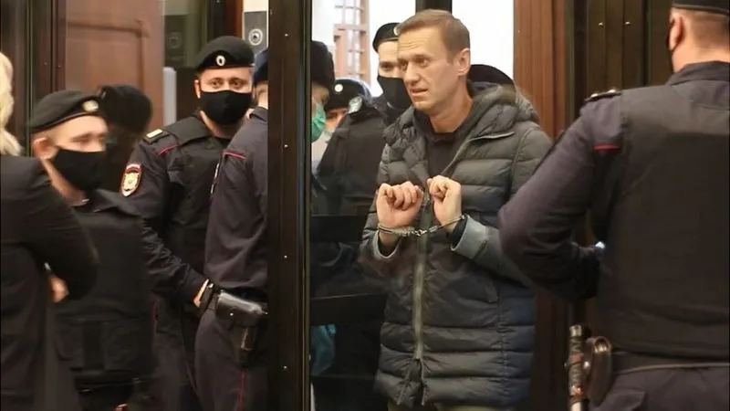
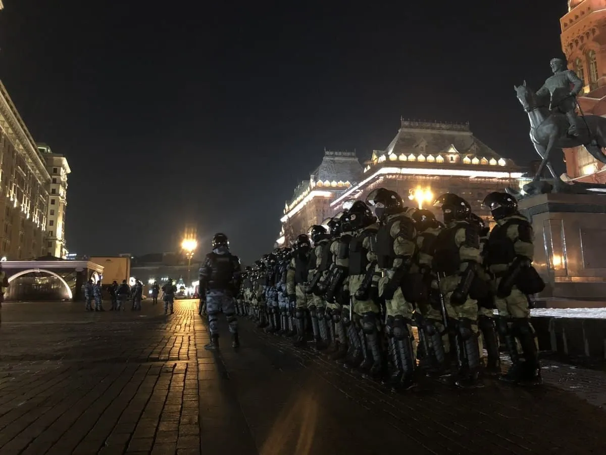
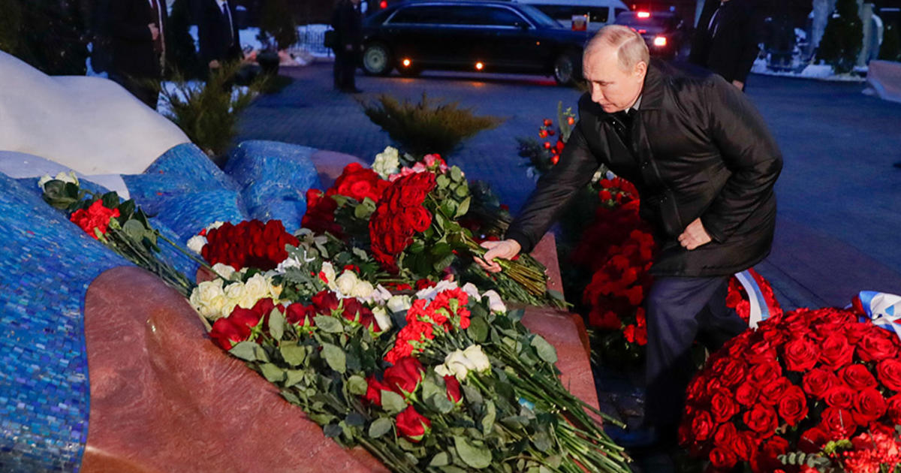

Политика
Навальный в России
17 янвавря 2021 Навальный прилетел в России и сразу его арестовали. По мне правильно сделали. Он шпион США - враг России.
Скажу я так, что для меня Навальный - это предатель Родины. Он никогда больше не изменится. Он уже подчиняется США, чтобы через него получить доступ к управлению нашей страны. Но пока Путин президент у США ничего не выйдет.
23 января будет митинг. И че? Смысл этого митинга. Вот скажите кто этот Навальный? Он предатель Родины. Если он станет президентом, что сразу не будет коррупции? Или то что дороги станут качественнее Или чем вам Путин не нравится?
Путин - хороший президент. Он поднял нашу страну из забвения. Да и у него есть косяки, но зачем его свергать. Наоборот его сергать не надо, пусть будет правит страной. Ону же знает что надо делать. А Навальный? станет президентом и ничего он не знает что творится в стране.
Навального посадили
Московский городской суд приговорил российского оппозиционера Алексея Навального к 3,5 годам тюремного заключения и штрафу в размере 500 тысяч рублей (более 6,5 тысяч долларов). На фоне этого в России прошли массовые протесты и жесткие задержания.
Решение было принято 2 февраля. Таким образом, ему заменили условный срок на реальный. Приговор суда может быть обжалован.
На решении настаивала Федеральная служба исполнения наказаний РФ, ее ходатайство поддержала прокуратура. При этом защита Навального требовала отменить прошение ФСИН.
Что решил суд
Судья объявила, что оппозиционера должны отправить в колонию общего режима. Как уточнили в Общественной наблюдательной комиссии, Навального этапируют в одну из колоний Центрального федерального округа. До вступления приговора в силу он будет находиться под стражей.
Также суд учел домашний арест, под которым находился политик около года. Таким образом, он проведет в заключении 2,8 года и выйдет на свободу к 2023-му.
Защита оппозиционера заявила, что будет обжаловать решение суда .
Что сказал Навальный во время заседания суда
Сам политик ранее выступил с речью, в которой назвал президента РФ Владимира Путина "отравителем трусов". Он также напомнил, что его судили по делу, которое Европейский суд по правам человека признал сфабрикованным.
Главные цитаты политика:
- "Кому-то хотелось, чтобы с момента пересечения границы я оказался арестантом. Причина этому – ненависть и страх одного человека, живущего в бункере. Я нанес ему смертельную обиду тем, что выжил".
- "Мы доказали, что именно Путин совершил это покушение на убийство. И вот это сводит с ума этого маленького вороватого человека в его бункере".
- "В историю он (Путин) войдет именно как отравитель. Вот знаете, был Александр Освободитель или Ярослав Мудрый. А у нас будет Владимир Отравитель трусов".
- "Если мы откроем уголовное право, ваша честь, я надеюсь, вы делали это пару раз, мы увидим, что ЕСПЧ является частью (российской судебной системы) и его решения обязательны (к исполнению)".
Реакция на приговор суда
Международная общественность уже начала высказывать свое мнение по поводу судебного процесса над оппозиционным российским политиком.
Так, министр иностранных дел Германии Хайко Маас осудил решение суда и назвал его "произвольным". Глава МИД призвал немедленно освободить политика. С таким же призывом выступила и канцлер Ангела Меркель.
Госсекретарь США Энтони Блинкен в свою очередь призвал освободить Навального "немедленно и безо всяких условий".
В то же время сенатор США Митт Ромни анонсировал внесение законопроекта о новых санкциях против РФ из-за приговора Навальному.
А глава МИД Великобритании Доминик Рааб потребовал освободить не только Навального, но и всех задержанных в России во время протестов за последние две недели.
Президент Франции Эммануэль Макрон призвал немедленно освободить Навального.
Высокий представитель ЕС по иностранным делам Жозеп Боррель заявил, что приговор оппозиционеру "противоречит международным обязательствам России в области верховенства права и основных свобод".
В свою очередь в МИД РФ сочли призывы Запада "вмешательством в дела суверенного государства".
Протесты в России
Под зданием Московского городского суда еще во время заседания начался митинг сторонников оппозиционера, которых массово задерживали силовики.
В то же время штаб Навального после решения суда объявил о старте акции протеста на Манежной площади в Москве. Кроме того, акции прошли в других городах РФ, в частности – Санкт-Петербурге.
Силовики РФ в свою очередь стянули многочисленные силы, чтобы противостоять людям. Задержаны более тысячи человек, также некоторых из них избили. В числе задержанных и пострадавших есть журналисты.
За что осудили этого Муддака
Политика обвинили в несоблюдении условий испытательного срока по приговору от 2014 года. Речь идет о деле "Ив Роше".
Так, Следственный комитет утверждает, что братья Алексей и Олег Навальные обманом навязали российскому подразделению "Ив Роше", а также фирме "Многопрофильная процессинговая компания" (МПК) посредника в транспортно-логистических услугах – свою фирму "Главное подписное агентство" (Главподписка) и таким образом украли у "Ив Роше Восток" 26 млн рублей, а у МПК – 3,8 млн рублей.
Затем большую часть этих средств они якобы легализовали, фиктивно снимая помещения под офис "Главподписки" на семейной маленькой "Кобяковской фабрике лозоплетения" и оплачивая другие услуги и товары фабрики.
После вынесения приговоров братьям Навальным, Европейский суд по правам человека пришел к выводу, что они были приняты с нарушением конференции по правам человека. Однако Верховный суд РФ отказался выполнять решение ЕСПЧ и отменять приговоры.
Многие связывают происходящее с расследованиями ФБК Навального, в том числе и о Путине, и высокой поддержки россиян, которые выходили на протесты по всей стране.
Ельцину исполнилось бы 90 лет

Бори́с Николаевич Ельцин — советский и российский партийный, государственный и политический деятель. Первый президент Российской Федерации (1991—1999). Родился 1 февраля 1931, в селе Бутка, Буткинский район, Уральская область, РСФСР, СССР. Хороший был человек. Жалко, что он умер 23 апреля 2007 года в Москве.
Правительство РФ
Распоряжение Правительства РФ
Распоряжение Правительства РФ от 31 декабря 2020 г. N 3704-р
- Утвердить прилагаемый перечень российских программ для электронных вычислительных машин, которые должны быть предварительно установлены на отдельные виды технически сложных товаров.
- Настоящее распоряжение вступает в силу с 1 апреля 2021 г.
Перечень российских программ для электронных вычислительных машин, которые должны быть предварительно установлены на отдельные виды технически сложных товаров
| № | Наименование программы | Правообладатель | Адрес сайта правообладателя в информационно- телекоммуникационной сети "Интернет" | Операционная система |
|---|---|---|---|---|
| Оборудование беспроводной связи для бытового использования, персональные электронные вычислительные машины, имеющие сенсорный экран, обладающие двумя и более функциями, с предварительно установленными на них программами для электронных вычислительных машин, имеющие возможность установки таких программ из магазинов приложений для операционных систем, на | ||||
| 1 | Яндекс.Браузер | общество с ограниченной ответственностью "ЯНДЕКС" | https://browser.yandex.ru | Android, IOS |
| 2 | Яндекс | https://mobile.yandex.ru | ||
| 3 | Яндекс.Карты | |||
| 4 | Яндекс.Диск | |||
| 5 | Почта Mail.ru | общество с ограниченной ответственностью "Мэйл.Ру" | https://mail.ru | |
| 6 | ICQ | |||
| 7 | Голосовой ассистент "Маруся" | https://marusia.mail.ru | ||
| 8 | Новости Mail.ru | https://news.mail.ru | ||
| 9 | OK Live | https://ok.ru/live | ||
| 10 | Одноклассники | https://ok.ru | ||
| 11 | ВКонтакте | общество с ограниченной ответственность "ВКонтакте | htpps://vk.com | |
| 12 | MirPay | акционерное общество "Национальная система платежных карт" | https://mironline.ru/mirpay | Android |
| 13 | Госуслуги | Российская Федерация | https://www.digital.gov.ru | Android, IOS |